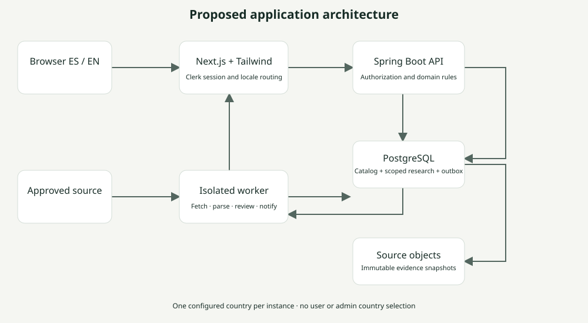
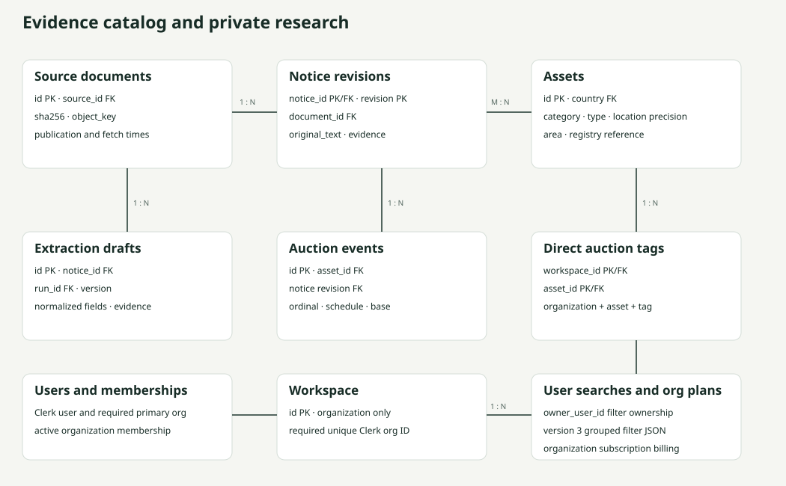

Architecture and data diagrams
These visual summaries accompany the full editable Mermaid sources. Each database has one deployment-provisioned jurisdiction; no country selection is exposed. The many-to-many asset/notice relationship is implemented through asset_notice. RLS applies to workspace research, tag definitions and assignments, separately from the global catalog. Organization roles are ADMIN, MANAGER and USER; SYSADMIN is a separate system grant. ADMIN/MANAGER manage organization tags.
System architecture

Editable architecture MermaidEntity relationship overview

Full editable ERD MermaidPublication sequence
Immutable source → draft → reviewer and expected-version check → revision plus audit and outbox transaction → deduplicated notification.
Editable sequence Mermaid